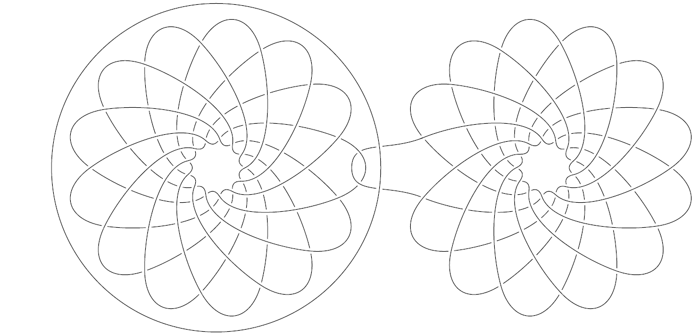
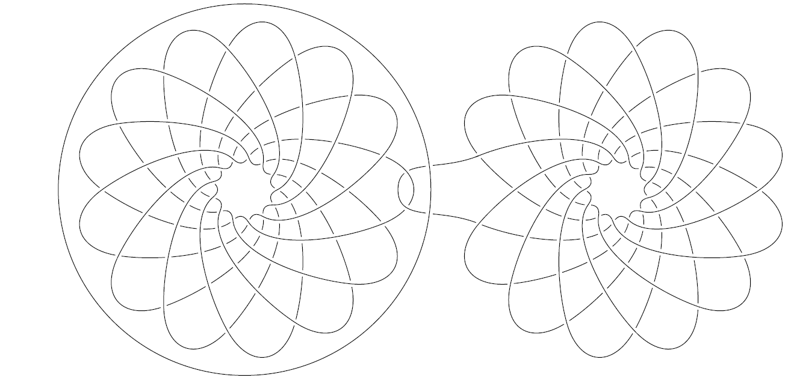

Corentin Lunel
I have been a postdoctoral researcher at Charles University in Prague since October 2025 in collaboration with Martin Tancer. Before that, I was a postdoctoral researcher at Inria in Montpellier for 1 year in collaboration with Clément Maria within the Datashape team.
I did my PhD studies at Laboratoire d'Informatique Gaspard Monge of Université Gustave Eiffel, working under the supervision of Arnaud de Mesmay and Pierre Dehornoy. You can find my thesis here.
I am motivated by topics related to mathematics, in particular low-dimensional topology and theoretical computer science. In particular, I am interested in studying the rich connections appearing between graph theory and knot theory from a computational point of view.
You can contact me by sending an email to corentin (dot) lunel (at) ens-lyon (dot) fr or corentin (dot) lunel (at) kam (dot) mff (dot) cuni (dot) cz. My CV.
I am a laureate of a prix solennel de thèse 2025 from the Chancellerie des Universités de Paris in the general science category .
Publications
- Hard Diagrams of Split Links, arXiv.
with Arnaud de Mesmay and Jonathan Spreer, 2024.
SoCG 2025. - Hopf Arborescent Links, Minor Theory, and Decidability of the Genus Defect, arXiv.
with Pierre Dohornoy and Arnaud de Mesmay, 2023.
SOCG 2024. Accepted in Discrete & Computational Geometry, in the special issue for SoCG 2024. - A Structural Approach to Tree Decompositions of Knots and Spatial Graphs, arXiv..
with Arnaud de Mesmay, 2023.
SOCG 2023. Accepted in Algebraic & Geometric Topology. - Etude d'un invariant des noeuds alternés et mise en oeuvre informatique, PDF, code.
with Hugo Fages and Quentin Rembert.
Quadrature 112 (2019) p23-31.
Preprints
- Well-quasi-orders on embedded planar graphs, arXiv.
with Clément Maria, 2025.
Some pictures


 s

s
